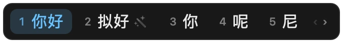
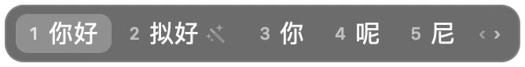

好用输入法是 Mac 上的拼音输入法。你打的字只留在这台 Mac 里，打得越多，它的首选越准。
免费 · 34 MB · macOS 14 及以上
Apple 芯片和 Intel · 已通过 Apple 公证
别的输入法给你「来」。选三次「了」，看看会怎样。
换输入法的人，通常是被这三件事逼的
- 广告和弹窗。
打着字，新闻推送和皮肤商城先跳了出来。
- 打的字去了哪儿。
联网输入法要把内容发到服务器才能「云联想」，你没法知道它存了什么。
- 自带的不够懂你。
系统拼音整句常出错，同一个词你选了一百次，它还是排在第三。
好用输入法把这三件事一起解决：智能全部放在你的 Mac 本机里做。
你打的字，只在你的 Mac 上
好用输入法学习的是「你打了哪几个字母、选了哪个词」的次数，存在你自己的 ~/Library/Haoyong/ 里。完整的句子它从来不存。
想看它学了什么，打开设置就能看到每一条，也能删掉。
好用输入法只会在这三种情况下联网
你自己打开了多设备同步
你点了「下载语法模型」
每天一次检查有没有新版本可以关掉，只下载一个很小的版本文件
选三次「了」，它就记住了
你打 l，想要的是「了」，别的输入法偏偏给你「来」。在好用输入法里选三次「了」，下一次它就排在第一位。
它还会看前一两个字：在「慢慢」后面打 de，它给你「地」；在「跑」后面打 de，它给你「得」。
| 你打的 | 它给的首选 | 为什么 |
|---|---|---|
| l第四次 | 了 | 你选过三次「了」，它就从空心描成了实心 |
| feichangfe | 非常地 | d 按成了旁边的 f，它照样认出你要打的是 feichangde |
| mignbai | 明白 | 两个字母按反了，首选照样是你要的 |
第一次打的句子，也大多是对的
整句输入时，首选就是你要的那句话的比例。同一组 98 句日常、工作和游戏聊天里，装上语法模型的好用输入法是 91.8%，不装也有 88.8%，常用的开源词库雾凇是 83.7%。一个词一个词地打，同样的话打过几遍之后，好用输入法的首选准确率到 97.3%。
测试方法：模拟真实打字，第一次见到的句子只看首选，不翻页。前三条是整句一次打完；最后一条是一个词一个词地打，同一组句子打到第 4 遍时的结果。数字测于 0.2.4 发布版。语法模型是设置里可选下载的增强包（约 400 MB）。测试语料和工具在项目里，结果会随版本更新。
细节都替你想好了
- 打错也能对
- 相邻键按错、多按一个键、两个键按反，候选后面带一个小魔法棒
- 键盘连击
- 同一个键 45 毫秒内按了两次，只算一次
- 中英混打
- 拼音状态下打 github，回车就是 github
- 写代码不打扰
- 终端、Xcode、VS Code 里默认英文
- emoji
- 打 ke 也能出 🉑，不想要可以关掉
- 专业词包
- IT、医学、法律、地名、历史名人、诗词，需要哪个开哪个
- 自动更新
- 有新版本时菜单里会提示，更新包有签名校验
- 六款皮肤
- 原生、橘红、墨黑、玻璃、纸白、极简，支持竖排；样子在下面
- 原生
- 橘红
- 墨黑

- 玻璃

- 纸白
- 极简
三步装好，不用写配置
下载并打开安装包，输入一次管理员密码（输入法要装进系统的输入法文件夹）
系统问「允许“好用输入法”」时点允许，然后在菜单栏的输入法菜单里选「好用拼音」
开始打字。想要整句更准，在设置里下载语法模型增强包（约 400 MB）
常见问题
免费吗？
免费下载、免费使用，没有内购，也没有会员。
你说不上传，我怎么确认？
联网的三种情况都写在上面，你可以用任何抓包工具验证。学习记录在设置的「学习记录」里，每一条都能看、能删。
和系统自带的拼音比，换过来要重新习惯吗？
按键习惯一样：全拼、Shift 切换中英文、数字键选词、- = 翻页。头几天它在学你，越用越顺手。
支持双拼、五笔、iPhone 吗？
现在只有 Mac 版的全拼。
怎么卸载？
打开好用输入法的设置，在「关于」页最下面点「卸载…」，输一次管理员密码就行。卸载时可以选择保留还是删除学习记录（在 ~/Library/Haoyong/）。0.2.1 及更早的版本没有这个按钮：先在「系统设置 › 键盘 › 输入法」里把它移除，再删掉 /Library/Input Methods/Haoyong.app。
词库是哪来的？
主词库和语法模型来自开源项目「万象拼音」（CC BY 4.0），专业词包来自清华大学 THUOCL（MIT）。完整的开源组件列表在发布页。
下载好用输入法，让输入法开始学你。
免费 · 34 MB · 已通过 Apple 公证 · 没有广告